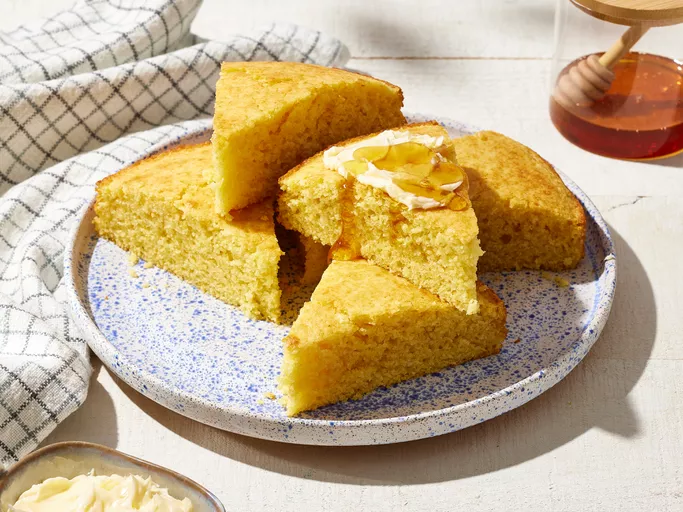

Sweet Cornbread

Description
This scratch-made cornbread is perfect with chili, ribs, or barbecued chicken. Passed down through generations, it's now a family favorite. Serve with butter, honey, or your favorite spread for a delicious treat.
Ingredients
- 1 cup all-purpose flour
- 1 cup yellow cornmeal
- 2/3 cup white sugar
- 3 1/2 teaspoons baking powder
- 1 teaspoon salt
- 1 cup milk
- 1/3 cup vegetable oil
- 1 large egg
Steps
- Gather the ingredients
- Preheat the oven to 400 degrees F (200 degrees C). Lightly grease a 9-inch round cake pan.
- Whisk flour, cornmeal, sugar, baking powder, and salt together in a large bowl.
- Add milk, vegetable oil, and egg; whisk until well combined.
- Pour batter into the prepared pan
- Bake in the preheated oven until a toothpick inserted into the center of the pan comes out clean, 20 to 25 minutes.
- Slice and enjoy!
Recipe Credit
This recipe was created by bluegirl on AllRecipes
Return